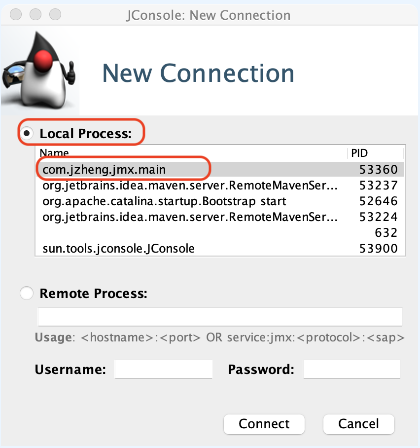
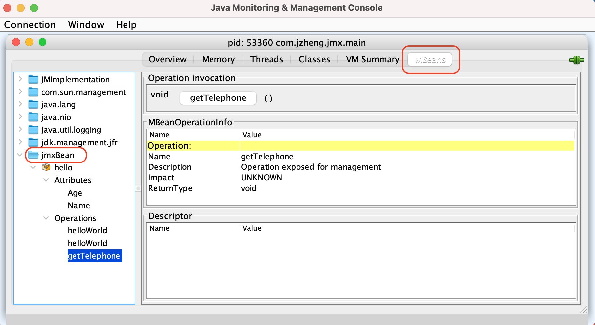

Tomcat 中用到这个技术，但是很陌生，手机一下资料，整理如下。
JMX - java management extension, 简单理解就是 Java 提供了一套规范，可以在 JVM 运行时，操作对象。
示例
新建一个类并在 MBeanServer 中注册，等程序运行时，我们可以通过 jconsole 对运行时的对象进行操作
1
2
3
4
5
6
7
8
9
10
11
12
13
14
15
16
17
18
19
20
21
22
23
24
25
26
27
28
29
30
31
32
33
34
35
36
37
38
39
40
41
42
43
44
45
46
47
48
49
50
51
52
53
54
55
56
57
58
59
60
61
62
63
64
65
66
| public interface HelloMBean {
public String getName();
public void setName(String name);
public String getAge();
public void setAge(String age);
public void helloWorld();
public void helloWorld(String str);
public void getTelephone();
}
public class Hello implements HelloMBean {
private String name;
private String age;
public void getTelephone() {
System.out.println("get Telephone");
}
public void helloWorld() {
System.out.println("hello world");
}
public void helloWorld(String str) {
System.out.println("helloWorld:" + str);
}
public String getName() {
System.out.println("get name 123");
return name;
}
public void setName(String name) {
System.out.println("set name 123");
this.name = name;
}
public String getAge() {
System.out.println("get age 123");
return age;
}
public void setAge(String age) {
System.out.println("set age 123");
this.age = age;
}
}
import javax.management.MBeanServer;
import javax.management.ObjectName;
import java.lang.management.ManagementFactory;
public class main {
public static void main(String[] args) throws Exception {
MBeanServer server = ManagementFactory.getPlatformMBeanServer();
ObjectName helloName = new ObjectName("jmxBean:name=hello");
server.registerMBean(new Hello(), helloName);
Thread.sleep(60 * 60 * 1000);
}
}
|
ObjectName("jmxBean:name=hello"); 中括号中的内容类似 entrypoint 可以确定我们要监测的节点。下一句就是注册 bean 到 MBeanServer。运行程序后 thread 会 hold.
这时启动 jdk 的 bin 目录下的 jconsole 客户端，选择 main 这个 thread, 链接上去

选中 MBean tab，展开 jmxBean 可以看到我们定义的 MBean

其他链接方式
JMX 是一个规范，除了 jconsole 这中修改方式，还是通过 web, client 等，只需要实现了对应的接口就行。暂时没用到，略。
这篇博客说的很详细，有需要可以参考一下 cnblog